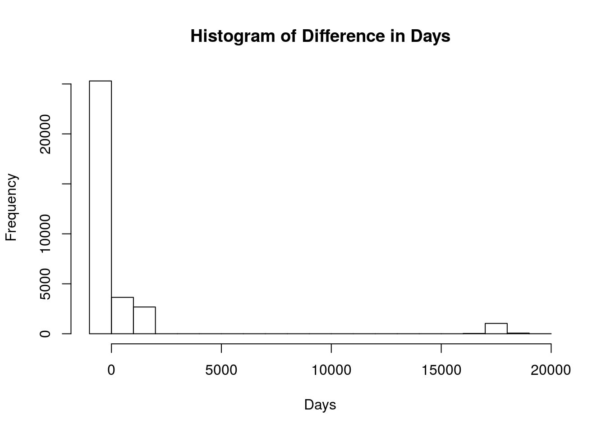

Lesson: 2 Basic Data Manipulation
The most time intensive task in data science endeavors is pre-processing data. Real world data is often complex and messy. Data processing (sometimes called “munging” or “data wrangling”) cleans and manipulates data so that it is in a form that is useful for models and visualizations. The R programming language is one of the best tools for manipulating data. This lesson will discuss the basics of data structure as well as ways to subset, extract and otherwise manipulate basic data.
Figure 1: “Data Wrangling”" is often the most difficult part of data science
2.1 Data
For this lesson we will use casualty data from the Korean War. This data is available at Kaggle. You should have downloaded this data for the practice problem in Lesson 1. First, let’s read the data into R:
kor <- read.csv("KoreanConflict.csv", as.is = TRUE)Now let’s explore the data with some of the tools we learned in Lesson 1. First, let’s look at the structure of the data:
str(kor) ## Print the structure of the Korean Casualty Data## 'data.frame': 36574 obs. of 25 variables:
## $ SERVICE_TYPE : chr "V" "R" "R" "V" ...
## $ SERVICE_CODE : chr "L" "K" "K" "L" ...
## $ ENROLLMENT : chr "ACTIVE - GUARD/RESERVE" "ACTIVE - REGULAR" "ACTIVE - REGULAR" "ACTIVE - GUARD/RESERVE" ...
## $ BRANCH : chr "AIR FORCE" "ARMY" "ARMY" "ARMY" ...
## $ RANK : chr "CAPT" "PVT" "PFC" "2LT" ...
## $ PAY_GRADE : chr "O03" "E02" "E03" "O01" ...
## $ POSITION : chr "" "FOOD SERVICE APPRENTICE" "HEAVY WEAPONS INFANTRYMAN" "INFANTRY UNIT COMMANDER" ...
## $ BIRTH_YEAR : chr "1917" "1927" "1932" "1929" ...
## $ SEX : chr "M" "M" "M" "M" ...
## $ HOME_CITY : chr "NEW YORK" "UNKNOWN" "UNKNOWN" "UNKNOWN" ...
## $ HOME_COUNTY : chr "NEW YORK" "OCONEE" "BIBB" "COAHOMA" ...
## $ NATIONALITY : chr "US" "US" "US" "US" ...
## $ STATE_CODE : chr "NY" "GA" "GA" "MS" ...
## $ HOME_STATE : chr "NEW YORK" "GEORGIA" "GEORGIA" "MISSISSIPPI" ...
## $ MARITAL_STATUS : chr "MARRIED" "UNKNOWN" "UNKNOWN" "UNKNOWN" ...
## $ ETHNICITY : chr "WHITE" "WHITE" "WHITE" "WHITE" ...
## $ ETHNICITY_1 : chr "NOT SPECIFIED" "NOT SPECIFIED" "NOT SPECIFIED" "NOT SPECIFIED" ...
## $ ETHNICITY_2 : chr "WHITE" "WHITE" "WHITE" "WHITE" ...
## $ DIVISION : chr "93 BOMB SQ 19 BOMB GP" "29 RGT CMBT TEAM" "5 RGT 1 CAV DIV" "32 INF 7 DIV" ...
## $ INCIDENT_DATE : chr "19510412" "19500727" "19510316" "19530122" ...
## $ FATALITY_YEAR : chr "1951" "1950" "1951" "1953" ...
## $ FATALITY_DATE : chr "20010402" "19500727" "19510316" "19530122" ...
## $ HOSTILITY_CONDITIONS: chr "H" "H" "H" "H" ...
## $ FATALITY : chr "DECLARED DEAD" "KILLED IN ACTION" "KILLED IN ACTION" "KILLED IN ACTION" ...
## $ BURIAL_STATUS : chr "Y" "Y" "Y" "Y" ...We see that this data has 36,574 rows and 25 columns. It appears that each row of the data represents an individual service member who died in the Korean War. Note that every single column is a character vector. This includes the rows like BIRTH_YEAR and INCIDENT_DATE that appear like they should be numeric (the fact that they are character means that at least one entry in this column has alphabetic letters rather than numbers).
2.2 Cell level data access
This data set contains two dimensions (rows and columns). To access specific rows and columns in R, we use [row,column] format. For example, to access the data in the first row and first column of Korea data, we would use
kor[1,1] ##First row, first column## [1] "V"If we want to access the first 5 entries from the first column, we would use
kor[1:5,1] ##First five entries from the first column## [1] "V" "R" "R" "V" "R"Now if we want to access the first three rows from the 1st, 3rd, and 8th column, we use the following format
kor[1:3,c(1,3,8)]## SERVICE_TYPE ENROLLMENT BIRTH_YEAR
## 1 V ACTIVE - GUARD/RESERVE 1917
## 2 R ACTIVE - REGULAR 1927
## 3 R ACTIVE - REGULAR 1932You can also use column names (or headers) to extract data from specific columns. This is especially helpful if you can’t remember respective column numbers, or if you think the column order will ever change. To extract the first three rows of data from BRANCH, RANK, and HOME_STATE, we can use the code below.
kor[1:3,c("RANK","BRANCH","HOME_STATE")]## RANK BRANCH HOME_STATE
## 1 CAPT AIR FORCE NEW YORK
## 2 PVT ARMY GEORGIA
## 3 PFC ARMY GEORGIARemember that each column represents a vector. In addition to the method we just showed, you can access data from each column vector with the following script:
kor$RANK[1:5] ##Prints first five entries in RANK vector## [1] "CAPT" "PVT" "PFC" "2LT" "CPL"The script above essentially says select the RANK column from the kor data frame, and then print to the screen the first five entries of this column.
2.3 Table Command (and an example of data “cleaning”)
Let’s explore the data a bit more. The table command provides a great way to see all of the possible entries in categorical data. The table command has similar functionality to Pivot Tables in Excel, but is much easier to use. To illustrate this command, we will table the BIRTH_YEAR
table(kor$BIRTH_YEAR) ##Table BIRTH_YEAR##
## 1889 1894 1895 1896 1900 1902 1903 1904 1905 1906 1907 1908 1909 1910
## 2271 1 1 1 1 5 7 2 15 14 25 22 26 48 61
## 1911 1912 1913 1914 1915 1916 1917 1918 1919 1920 1921 1922 1923 1924 1925
## 76 104 116 143 183 224 300 424 421 506 624 657 781 888 1107
## 1926 1927 1928 1929 1930 1931 1932 1933 1934 1935 A2 A3 A4 ANT ART
## 1278 1988 3621 4358 5479 5077 3630 1296 328 61 8 16 3 1 31
## AUT CHI CLA COA COM CON COR CRY ENG FIE FIR FIX FUE GEN GUN
## 13 41 1 1 8 2 4 1 1 6 2 3 1 71 1
## HEA HIG INT LAN LAU LIG LOW MAJ MAR MIL MIN MOT NON OPE RAD
## 37 4 17 2 1 2 25 1 1 1 20 3 5 6 1
## RAI SAX SIG SNA STA TAC TE TOP TRA TUB WAR
## 2 2 2 2 2 1 2 4 31 1 14The table command provides the number of records for each category. Here we learn that our data is a bit messy. Notice that although most of the entries are numerical, that there are numerous entries that don’t look like a year. We can see this again if we table data by gender:
table(kor$SEX) ##Table by gender##
## 19040000 19060000
## 2 1
## 19070000 19080000
## 3 1
## 19081017 19090000
## 1 1
## 19100000 19110000
## 4 6
## 19120000 19130000
## 1 2
## 19130816 19140000
## 1 3
## 19150000 19150810
## 7 1
## 19160000 19170000
## 6 2
## 19180000 19190000
## 11 14
## 19190222 19200000
## 1 7
## 19210000 19220000
## 13 11
## 19230000 19240000
## 6 16
## 19240905 19250000
## 1 15
## 19250511 19250909
## 1 1
## 19260000 19270000
## 20 19
## 19280000 19280527
## 36 1
## 19281122 19290000
## 1 47
## 19290821 19291105
## 1 1
## 19300000 19300526
## 41 1
## 19300624 19310000
## 1 36
## 19311003 19320000
## 1 15
## 19320525 F
## 1 2
## M MANUAL
## 36169 4
## S2) S3)
## 8 16
## S4) TRACK VEHICLE (3D ECHELON)
## 3 1
## WHEEL VEHICLE GASOLINE) WHEEL YEHICLE (3D ECHELON)
## 1 9Note that this doesn’t give just male and female. For our purposes we’re going to try to remove this messy data. Note that in some cases you will want to fix messy data, not remove it. In removing the data, I am going to assume that the same rows of data that produce errors in the GENDER field are the same rows of data that will produce errors in the BIRTH_YEAR data. To remove this data, we will leverage the fact that we want to keep all of the data from BIRTH_YEAR that is numeric, and get rid of every row of data that contains alphabetical character data. In the following code we will coerce this column into numeric data.
kor$BIRTH_YEAR <- as.numeric(kor$BIRTH_YEAR)## Warning: NAs introduced by coercionThe as.numeric command coerces the data to the numeric class. Note that there is also an as.character and as.factor command that will coerce data to these respective data classes. This as.numeric command will create an NA value for every entry that is not numeric. It is now much easier to remove all rows that contain an NA in the BIRTH_YEAR column. The code below provides a way to subset the data by removing the rows that contain an NA value in the BIRTH_YEAR column. There are many ways to subset and cut data in R. Below we will use the bracket functionality that we discussed above. You can also use the subset command in the base R packages. Later in this tutorial we will use the filter command that comes in the dplyr package.
kor <- kor[!is.na(kor$BIRTH_YEAR),] ##Remove rows that contain an NA value in the BIRTH_YEAR columnIn the code above, the is.na function produces a Boolean vector with TRUE values if an NA value is found. The exclamation point means NOT, and changes every TRUE to a FALSE (meaning it now produces a TRUE value if there is NOT an NA in that cell). By feeding this into our bracket functionality, we subset the data by removing all rows that contain an NA in the BIRTH_YEAR column. Now lets check the dimensions of our data:
dim(kor)## [1] 33899 25We now have 33,899 rows of data, meaning that we lost 2,675 rows of data. If we were conducting an in-depth study of the Korean War Casualties, we couldn’t just delete this data, but would rather have to painstakingly clean it. For our purposes, we are just going to delete it.
Now let’s see if that cleaned up the GENDER field. To do that, let’s call on the table command again:
table(kor$SEX)##
## F M
## 2 33897Notice that the data is now clean, and that in our cleaned data we only have two female casualties recorded. Let’s now use the table command to explore the data a bit more. Let’s create a table by rank:
table(kor$RANK)##
## 1LT 1STLT 2LT 2NDLT A1C A2C A3C AA AB AN BG CAPT
## 665 617 400 221 76 67 30 6 5 28 1 458
## CDR COL CPL CPO CPT CW2 CWO2 CWO-2 DN ENS FA FN
## 8 24 6035 25 239 4 3 1 1 61 16 29
## GEN HA HN LCDR LT LTC LTCOL LTJG MAJ MG MSG MSGT
## 1 2 52 12 55 24 37 79 165 1 471 68
## PFC PO1 PO2 PO3 PV1 PVT SA SFC SGT SN SSG SSGT
## 12826 44 32 119 7 6633 27 1154 2594 59 1 301
## TSGT WO1
## 97 18From this we learn that the PFC rank sustained the highest casualty numbers, and that the highest ranking casualty was a General (assuming this means 4-star General). Now let’s explore NATIONALITY. We assume that this is all US Nationality, but when we run this table command
table(kor$NATIONALITY)##
## CA DA EI RP UK US
## 6 1 1 1 1 33889we find out that there are a few other nationalities represented in the data. It’s interesting when we table the MARITAL_STATUS field that
table(kor$MARITAL_STATUS)##
## ANNULLED DIVORCED MARRIED NEVER MARRIED UNKNOWN
## 2 18 1129 993 31756
## WIDOWED
## 1we find out that the marital status of most of the casualties was unknown (which makes you wonder about the Defense Department data collection during the Korean War). Now let’s move on to filtering (or extracting a subset) of our data.
2.4 Filter (or subset) data
Extracting a subset of data is one of the most fundamental tasks of data manipulation. There a many different ways to filter data in R. In addition to using the bracket functionality discussed above, you could use the subset command provided in Base R. Today, one of the foremost R Programming Developers (Hadley Wickam) has developed a special packages called dplyr [(Wickham and Francois 2016) and tidyr (Wickham 2016) just for data wrangling. For the sake of simplicity, we will attempt to primarily use these packages for data wrangling in this course.


Given a two dimensional data structure, we can think of several ways we might want to extract data. The first is to extract rows associated with a certain feature. For example, if we had some basic data from an Army Physical Fitness (APFT) test, we may want to extract rows based on GENDER, as seen below.
Figure 2: Filtering Rows by Categorical Variable
If we were going to conduct this same operation (extract all FEMALE records) on our kor data frame with the dplyr package, we would execute the following command:
library(dplyr)
kor_female <- dplyr::filter(kor, SEX=="F")This command should produce a new data frame in your environment that has has two rows and 25 columns. This new data frame only contains the two FEMALE casualties represented in the data. To explore this much smaller data set, we could now table the data frame based on state:
table(kor_female$HOME_STATE)##
## IOWA WEST VIRGINIA
## 1 1and find out that one woman is from Iowa, and the other from West Virginia. If we table based on rank:
table(kor_female$RANK)##
## 1STLT
## 2we find out that both women were junior officers. If you take a look at the data further, you will learn that both women were in the Air Force and died in a non-hostile accident in 1952 on the same day (presumably the same accident).
Note that we can also filter rows based on a Boolean function. For example, if we wanted to only look at casualties that were over 30 years old in 1950, we could filter with the following dplyr command:
kor_Over30 <- filter(kor, BIRTH_YEAR < 1920) ##Filter those older than 30 in 1950When you run this command, you will find that our cleaned data produces 2220 records of casualties that were over 30 in the year 1950. If we wanted to only select those individuals that were in their 30’s in 1950, we would use the following dplyr command:
kor_30s <- filter(kor, BIRTH_YEAR < 1920 & BIRTH_YEAR > 1910)Running this command we find that 1,991 of the casualties were in their 30’s in 1950.
Now that we’ve filtered by row, let’s show how to filter by column. We’ve already demonstrated above how to do this with the bracket notation, now we will illustrate how to do this using the dplyr package. We often find that we’ve loaded data that has many columns that we’re not interested in. In these cases, it is often helpful to extract the columns that we’re interested in. This will also shrink the size of our data in memory, and make our code run faster. In the picture below, we illustrate this with some simple APFT data (in this case we’re extracting the demographic and raw score columns):
Figure 3: Filtering Specific Columns (or fields)
Let’s say we were studying the Korean Casualty data to understand the time factor of those who died of wounds, and were particularly interested in the time between INCIDENT_DATE and FATALITY_DATE. Below we’ll extract these two columns with the dplyr package:
kor_dates <- select(kor, one_of(c("INCIDENT_DATE","FATALITY_DATE"))) #Select two columnsNow if we look at the structure of this new data frame:
str(kor_dates)## 'data.frame': 33899 obs. of 2 variables:
## $ INCIDENT_DATE: chr "19510412" "19500727" "19510316" "19530122" ...
## $ FATALITY_DATE: chr "20010402" "19500727" "19510316" "19530122" ...We see that we only have two columns, but still have all 33,899 rows. The code below is beyond the extent of this lesson on filtering (it contains some code we’ll go over in Lesson 5) but is interesting to look at the difference between incident date and fatality date. In this code we will load the lubridate package (Grolemund, Spinu, and Wickham 2016) (another package written by Hadley Wickam) and use it to convert these two columns to date format and calculate the difference between them (i.e. the number of days between the incident that the death of the Service Member).
library(lubridate)
days <- ymd(kor_dates$FATALITY_DATE) - ymd(kor_dates$INCIDENT_DATE)
days[1:100]## Time differences in days
## [1] 18253 0 0 0 0 0 0 0 0 0 17697
## [12] 0 0 0 18342 31 0 0 0 1153 0 3
## [23] 0 0 355 0 0 0 0 0 0 0 53
## [34] 0 0 0 0 0 0 0 0 NA 0 0
## [45] NA 469 0 0 NA 0 0 981 0 0 0
## [56] 0 0 1131 1155 46 0 0 0 0 0 NA
## [67] 0 NA 0 1125 959 0 469 0 0 0 969
## [78] 0 0 31 0 1130 0 0 0 17568 0 1155
## [89] 120 0 177 0 154 0 0 7 0 0 NA
## [100] 0Looking at the first few entries makes us wonder. The very first entry had 18,253 days between the incident and the fatality. In fact, if you look closer at the dates, you will see that this Service Member had an incident on 12 April 1951, but wasn’t considered a fatality until 2 April 2001. In fact, if we quickly plot a histogram of the difference in days (you’ll learn this command next lesson):
#plot histogram of difference in days
hist(as.numeric(days), main="Histogram of Difference in Days", xlab="Days") 
Here we see that there’s a number of casualties that seem to have a fatality day around the year 2000. If you look at the original data will see that the first Service Member in the data (an Air Force Captain) is listed with an incident year of 1951 and FATALITY_DATE in 2001. Notice that the FATALITY status is DECLARED DEAD. This officer, as part of a bombing group, must have had an MIA status for several decades until finally “declared dead” in 2001. The “declared dead” date became his fatality date, which means it would be difficult to evaluate the temporal aspect of wound care with this data.
2.5 Using the grep and aggregate commands
The following video illustrates how to use the grep and aggregate commands. This video will use movie rating data that you downloaded in Lesson 1.
download.file("https://s3.amazonaws.com/dscoe-data/rating2.csv", destfile = "rating2.csv")2.6 Summary
What we have seen is that R produces a great platform to rapidly “wrangle” and explore data.
2.7 Practice Problem
- Use grep to determine how many casualties had *INFANTRY somewhere in their title (use the
POSITIONfield).
References
Wickham, Hadley, and Romain Francois. 2016. Dplyr: A Grammar of Data Manipulation. https://CRAN.R-project.org/package=dplyr.
Wickham, Hadley. 2016. Tidyr: Easily Tidy Data with ‘Spread()‘ and ‘Gather()‘ Functions. https://CRAN.R-project.org/package=tidyr.
Grolemund, Garrett, Vitalie Spinu, and Hadley Wickham. 2016. Lubridate: Make Dealing with Dates a Little Easier. https://CRAN.R-project.org/package=lubridate.